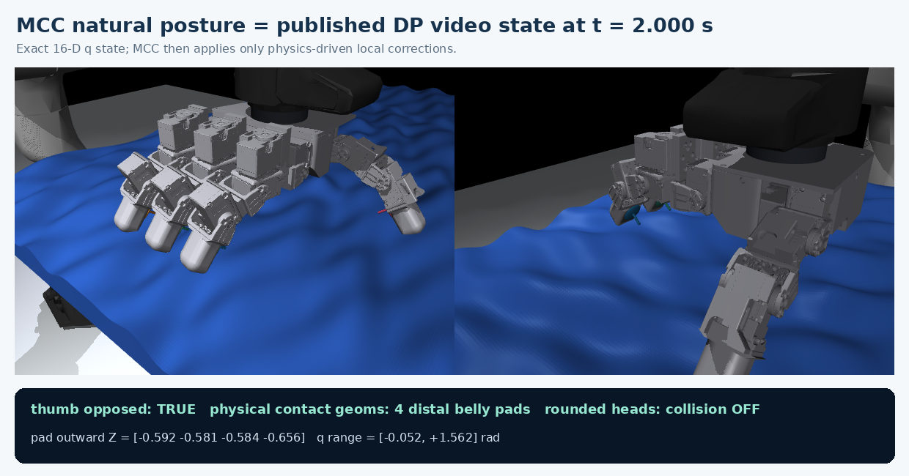
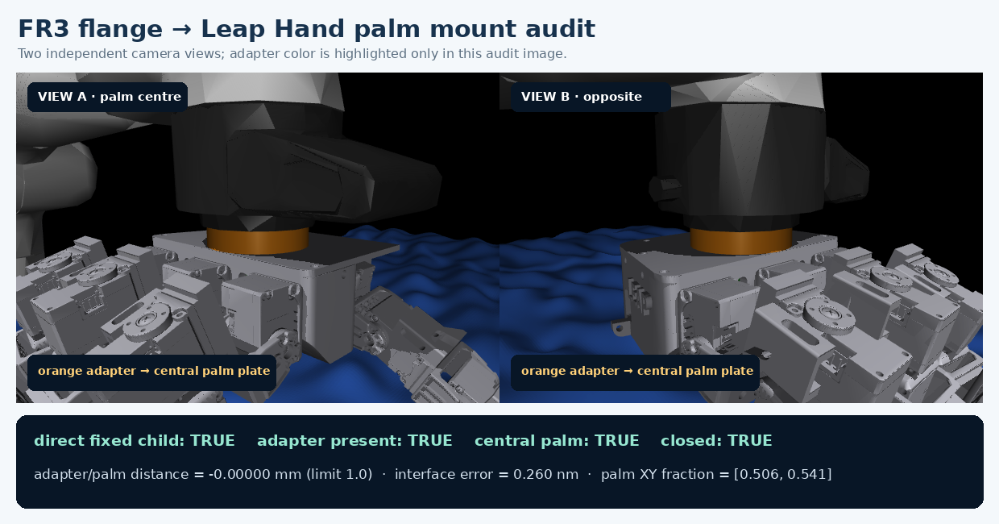
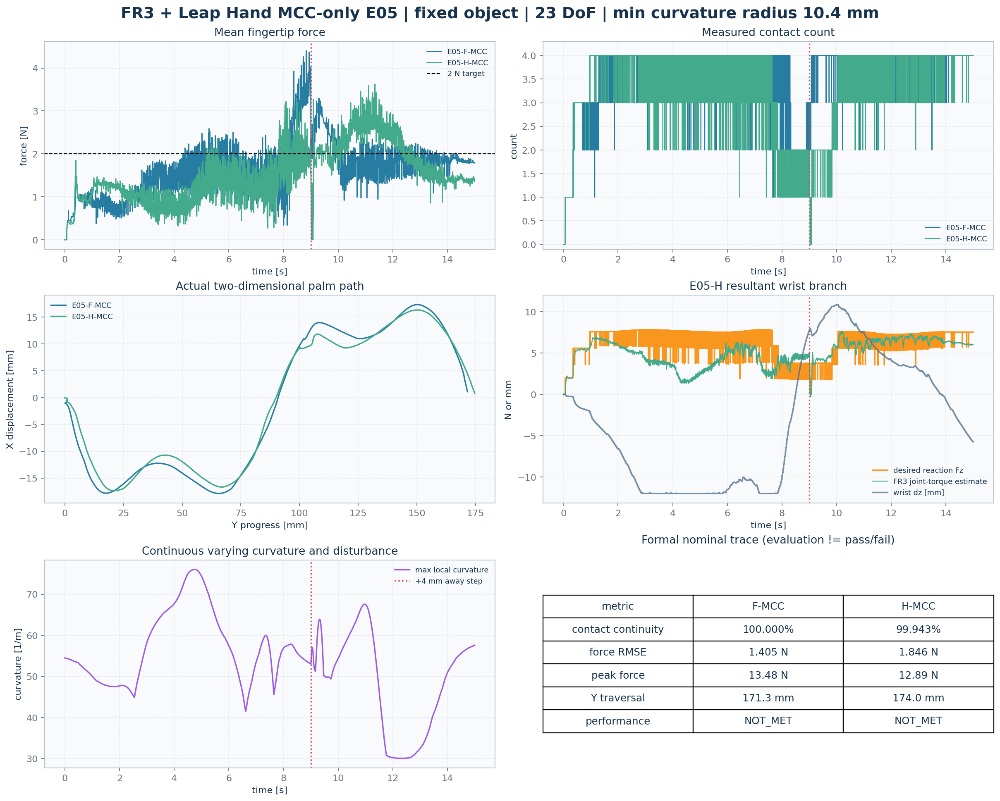
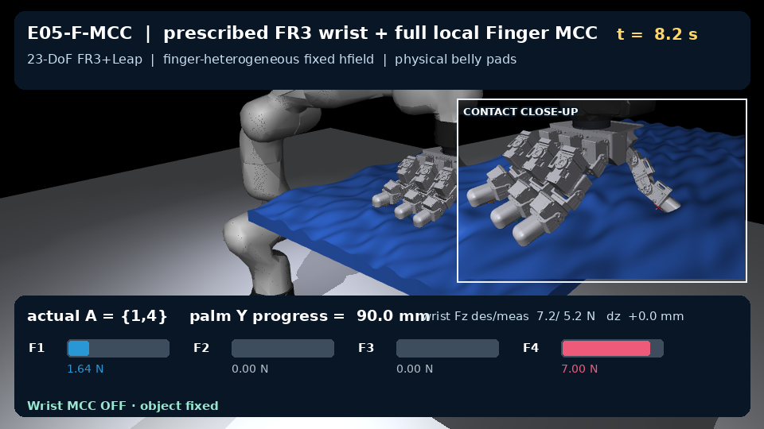

FR3 + Leap Hand：MCC-only E05
两个视频都来自同一冻结对象、trajectory 和 nominal seed。物体固定在 world；画面中的 palm 位移由 7-DoF FR3 真实执行。右上 inset 显示四个真实 fingertip-body belly pads。
自然接触姿态
MCC 的姿态参考精确取自已发布 DP 视频 t=2.000 s 的物理 q，不是 checkpoint mean。

E05-F-MCC
规定式 FR3 wrist tracking；四个 Finger MCC 使用完整 local force error。执行状态 EVALUATED，性能 NOT_MET。
E05-H-MCC
同一 nominal trajectory；FR3 Wrist MCC 调 resultant wrench，Finger MCC 只调 internal/differential error。执行状态 EVALUATED，性能 NOT_MET。
中央掌心安装审计
法兰轴显式对准 palm mesh 的中心区域；审计使用 mount-site 对齐和 adapter/palm 接口距离，不再用偏置 body origin 冒充安装点。

数值审计


边界：本页只评测 MCC；未验收的 DP 实现和结果不进入本页或本次提交。gravity 在冻结协议中关闭，不能把结果外推为 gravity-on 或硬件。